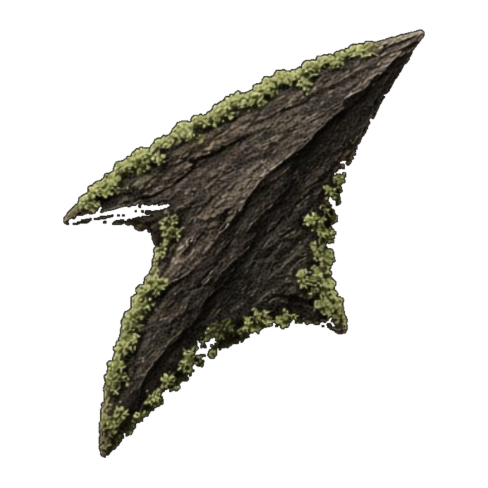

The mark is an arrowhead: a fletcher makes arrows, and this one is cut from bark with moss along the edges, pointing up and to the right. Everything here is derived from the banner and the product's own palette. Files are served from fletch.now/brand/.
One shape, traced from the banner photograph. The concave notch at the base is what reads as an arrowhead rather than a triangle, and it is the detail that must survive at small sizes.

Mark, wordmark, and the domain in mono beneath. The wordmark is Sora at 600, tracked tight; the domain is JetBrains Mono, tracked wide.
Keep a margin around the mark equal to the height of its notch, roughly a quarter of the mark's width. Below 16 pixels the barbs merge; use the mark alone, never the lockup, at those sizes.
Two families. The banner's — near-black, cream, bark and moss — for print and social. The product's — paper, ink and the chain's green — for the site and app. Green is punctuation, spent on the one thing that just changed.
Three faces, three jobs. Never more than one display size per screen.
Short rules that keep the mark recognisable.
Vector, served from the site. The banner itself (bark and moss render) is the master image for social and print.
| File | What |
|---|---|
| mark-green-on-black.svg | Primary mark, 256px tile |
| mark-cream-on-black.svg | Mark for dark grounds without the accent |
| mark-black-on-cream.svg | Mark for light grounds |
| mark-green.svg · mark-black.svg | Transparent, for placing on your own ground |
| mark-moss-on-bark.svg | The banner's palette as a flat tile |
| lockup-dark.svg · lockup-light.svg | Mark + wordmark + domain, 960×320 |
| mark-vector.svg · -black · -cream | Smooth vector silhouette, 1000×1000, for print and large sizes |
| mark-photo.svg · arrow-photo.png | The photographed arrowhead, transparent, 1024×1024 |
| mark-green-2048.png · -512 | Flat green silhouette, transparent PNG |
| arrow-albedo.jpg · arrow-alpha.png · arrow-normal.jpg | Colour, cut-out, and relief maps of the arrowhead, for 3D and motion work |
| fletch-banner.jpg | Master render — bark arrowhead with moss and wordmark, 1654×1101 |
| media-kit.html | This page, as served from the site |